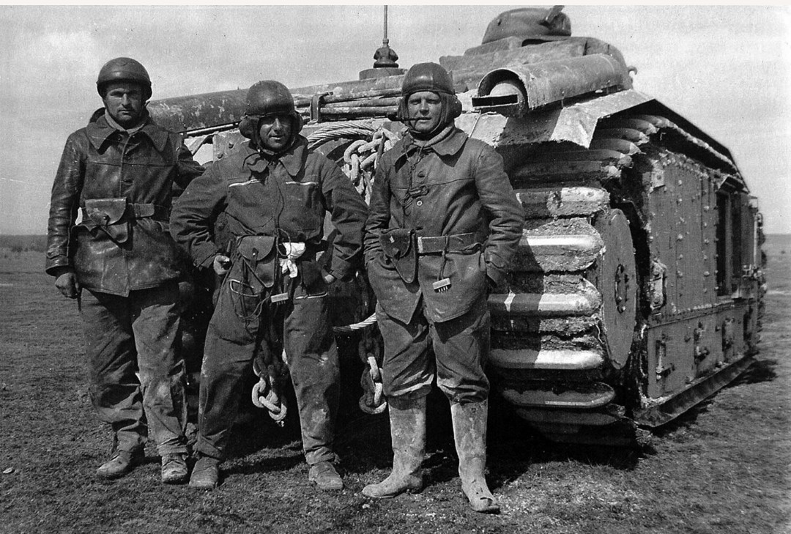

Présentation générale
Le tankiste français de 1939–1940 sert dans les équipages des chars B1 bis, SOMUA S35, Hotchkiss H39 ou Renault R35. Son uniforme est conçu pour résister aux contraintes de la vie à bord : chaleur, vibrations, métal brûlant, huile et espace très réduit.
L’élément le plus emblématique est la veste en cuir modèle 1935, portée avec le casque Adrian 1935 Tankiste doté d’oreillettes en cuir.

Équipement individuel
- Casque Adrian 1935 Tankiste (oreillettes cuir)
- Veste en cuir brun modèle 1935
- Pantalon de travail kaki
- Gants en cuir
- Ceinture cuir fauve + étui
- Brodequins modèle 1917
- Combinaison de char (selon unité)

Casque Adrian 1935 Tankiste
Le casque Adrian 1935 Tankiste est facilement reconnaissable grâce à ses oreillettes en cuir et son renfort frontal. Il est conçu pour protéger la tête tout en permettant l’utilisation du casque radio ou des écouteurs internes du char.
- Oreillettes en cuir
- Renfort frontal
- Compatibilité radio
- Foulard clair pour protéger le cou
Équipage et vie à bord
Les équipages français comptent entre trois et cinq hommes selon le modèle de char : chef de char, pilote, tireur, radio, parfois chargeur. L’uniforme doit rester pratique, résistant et peu encombrant pour évoluer dans un habitacle étroit et bruyant.
La photo d’époque montrant trois tankistes devant leur char illustre parfaitement la réalité de ces équipages en 1940 : cohésion, discipline et adaptation aux conditions difficiles du combat mécanisé.